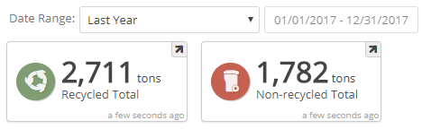
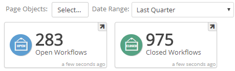
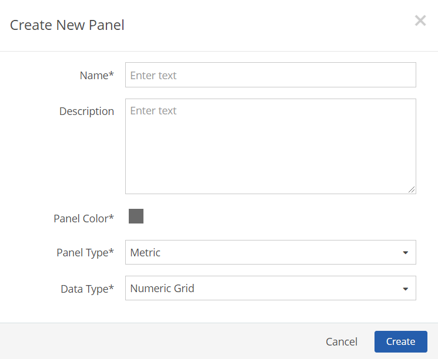
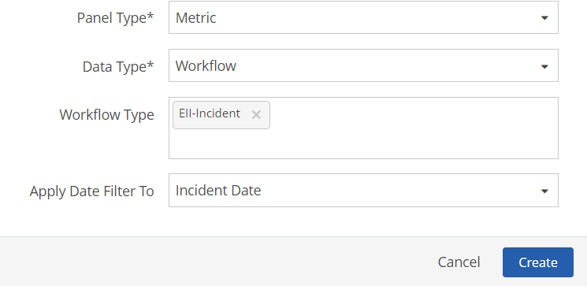
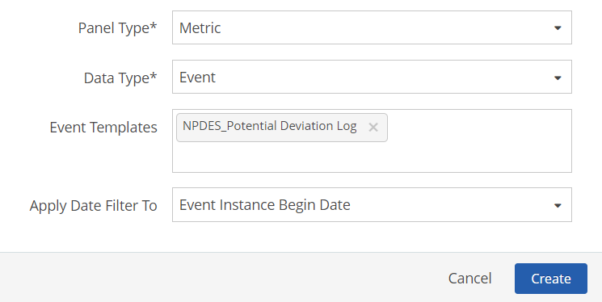
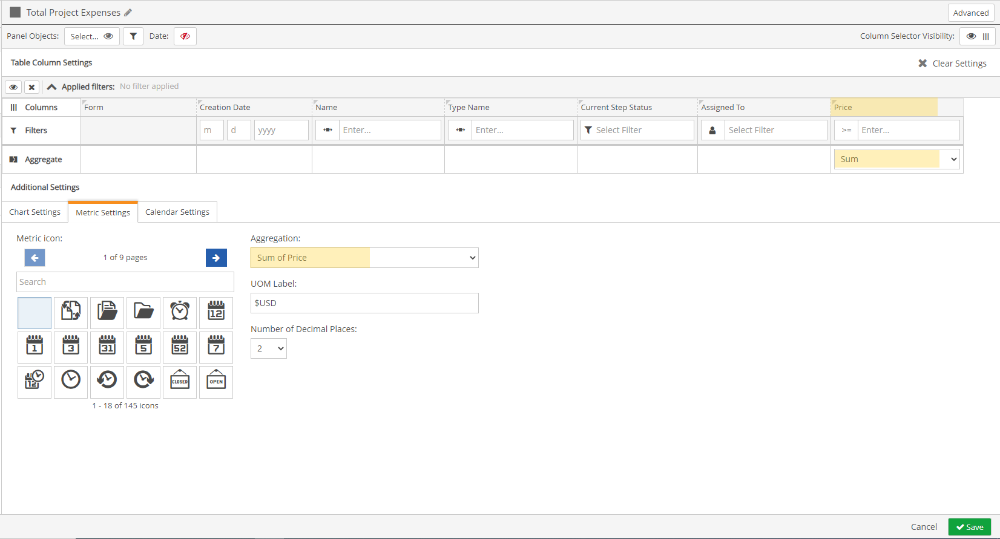

Metric panels show a single aggregate for an easy quick visual of key performance data. Aggregates may represent numeric data or counts of workflows or events.
Numeric Metric Examples:

Workflow Metric Example:

The aggregate value is based on the underlying data which is configured like you would configure a numeric data, workflow or event panel. The value displayed is a sum of all data included in the data set.
The metric panel has to be created initially as a Metric panel. (An existing panel cannot be converted to a Metric.)
To add a metric panel to a page:
From the page view, select Settings.
Click Add Panel.
From the Add New Panel dialog, click Create New Panel.
Or, select panel template(s) to add and click Add selected Panels.
Enter a name for the panel and optional description.
Optionally, you can choose a panel color which will be used for the icon background, if an icon is chosen in the configuration.
For the Panel Type, select Metric.
Select Data Type: Event, Numeric Data or Workflow.

If the data type is Workflows, select the Workflow Type and the field to apply the date filter to.

If data type is Event, select the Event Template and the field to apply the date filter to.

Select Create.
Once the panel has been created, configure it according to the data type (see below).
To configure, click the Edit (pencil) icon on the panel. You will be prompted to save the page first before proceeding.
Configure Numeric-based Metric Panel
Panel Objects: Select the requirement(s) whose values you want to use in the aggregate displayed in the metric. You can filter by parent objects (such as facility), if desired. Objects used in the panel may be any subset of the objects selected in the Page Objects filter. See Set Panel Objects Filter.
If the Ignore Page Filters panel setting is active, you will override any of the objects selected in the Page Objects filter. If Show Users All Objects in System is active in the page and/or panel settings, users may select any object in the system, regardless of their Management System object permissions. Users will then be able to view numeric data for any object, but will still require proper permissions in order to edit the data.
You can select a date range if it needs to be different than the page dates; otherwise page date selection will apply. Note that users will not be able to select a different date range for the metric, since there is no date control in metric view, so using the page date range is recommended. See Panel Date Selector.
There is a limit of 100 columns that may be included in the metric value. If this limit is exceeded, a yellow warning icon is shown on the metric panel and in the table view. The value displayed may not be correct since not all selected data will be included.
Additional Settings, Metric Settings tab:
Metric Icon: Optionally, you can select an icon to appear on the panel. The panel color is used for the icon background color.
UOM Label: Enter the text to represent the unit of measure, which will appear next to the number in the panel.
Number of Decimal Places: Number of decimal places to display. Values are rounded to the last decimal place.
The value displayed in the metric view is the SUM across all columns and rows you see in the table view.
Table and Chart Settings: You can configure the table and chart setting which will be shown in those views, available when the panel is expanded to show the underlying data. Column and Row Aggregations in the Table view settings do not affect the metric, but if any are set, they will be shown in the table view.
Panel Objects: If you want to apply a filter based on associated objects, you can select one or more facilities or other object. See Set Panel Objects Filter.
If the Ignore Page Filters panel setting is active, you will override any of the objects selected in the Page Objects filter. If Show Users All Objects in System is active in the page and/or panel settings, users may select any object in the system, regardless of their Management System object permissions. Users will then be able to view event data for any object, but will still require proper permissions in order to edit the event instance form. Users will only be able to view and edit data for workflow instances in which they participate through a Workflow Role with Report permission.
Date: You can set a panel date range if it needs to be different than the page dates; otherwise page date selection will apply. Note that users will not be able to select a different date range for the metric, since there is no date control in metric view, so using the page dates is generally the best practice. See Panel Date Selector.
Additional Settings, Metric Settings tab:
Metric Icon: Optionally, you can select an icon to appear on the panel. The panel color is used for the icon background color.
Aggregation: Default options are Count of Workflows or Count of Events. You may also use a numeric custom field included in the workflow or event, for which an aggregation has been specified in the table view.
For example, if a Total Cost field is included in the table column settings, with a column aggregate of Sum, you will be able to choose Sum of Total Cost as the metric panel value.

You can apply filters to the data using native and custom fields in the same way as for a Table and Chart panel. The filters will be applied to the metric accordingly. For example, you can filter for Open or Closed status for workflows, or by the value of an event field or workflow field.
Table and Chart Settings: You can configure the table and chart setting which will be shown in those views, which are available when the panel is expanded to show the underlying data.